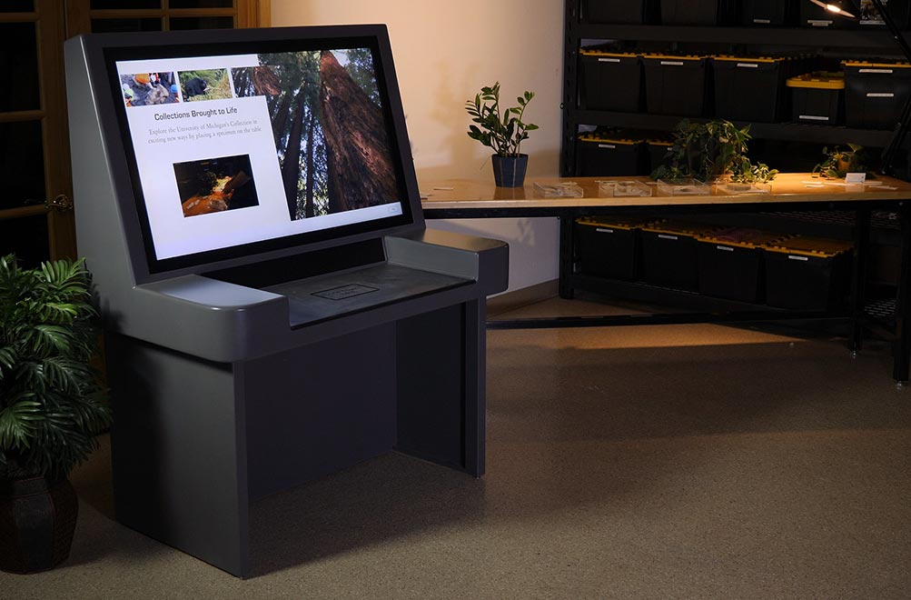
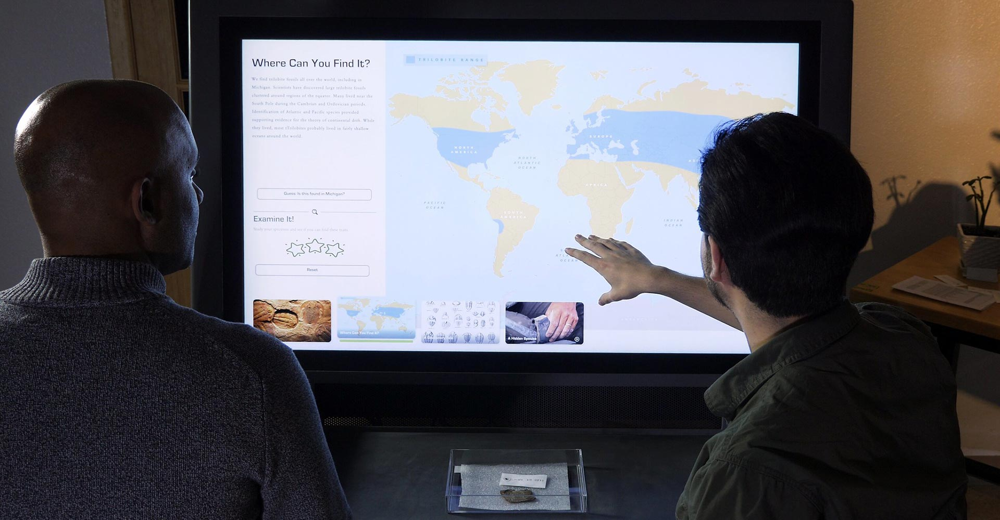

Michigan Naturalist Table

Type of Work:
- Software Development
- Interaction Design
- RFID Integration
The Michigan Naturalist Table is an exhibit for the brand new University of Michican Natural History musuem. This was developed at Ideum - for more specific information check out the description on their portfolio. The main goal of this exhibit was to allow visitors to view details about the museum's collection easily and with a touch of magic.
The exhibit consists of 20 different specimens and one specimen viewing station. Visitors will select a specimen that they are interested in and take it to the speciment viewing station. Once a specimen is placed on the viewing station, that specimen's information will appear on the screen. The viewing station contains information about each specimen, questions to help visitors investigate the specimen they chose, and unique and engaging media pieces.

How it works?
One of the goals of the Michigan Natural History museum was for this experience to be "magical" and not require much user input. Each specimen in the collection has an RFID-embedded tag. Inside the custom exhibit cabinetry, there is an RFID reader that will read the RFID tag as the specimen is placed on the shelf.
We were able to achieve approximately 18-24 inches of read distance above the shelf at full RFID reader power, and ended up aiming for 3 inches above the shelf as the optimal read distance.
We did discover an interesting issue during taping of the exhibit. If the plastic piece of the shelf was rubbed vigorously (such as wiping off smudges or finger prints), it would cause the RFID reader to stop functioning. What I discovered was that as the plastic was being rubbed, it would start to build up a static charge. Once that reached its peak, it would jump the small gap between the plastic and the RFID reader and cause the USB protection to trigger. This caused the RFID reader to stop functioning. Luckily, I remedied this by simply grounding the RFID's mounting screws into the computer's power supply.
Accessiblity
One concern for this exhibit was to make it as accessible as possible. My team and I designed an accessbility shortcut layer that allowed a visitor to view a specimen without necessarily having to select it off of the shelves. If a visitor holds three fingers down on the screen, it will activate a list view of the different specimens available for viewing. Additionally, instructions on how to access this view is included in the information that appears in the about window.
Managing Content
Due to the amount of information on each specimen, as well as the high likelihood of specimens being swapped out, removed, or added, I developed a Content Managment System (CMS). This CMS allowed for the addition, removal, and updating of specimens and their related information. This allows the curators and musuem staff to keep the exhibit up-to-date in an easy and user-friendly manner.